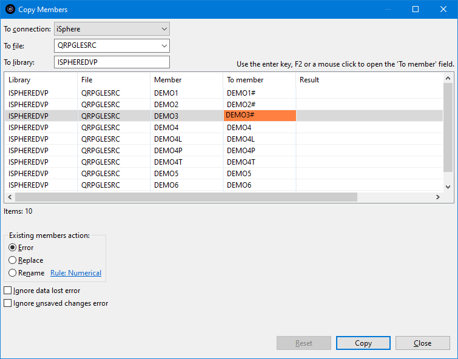
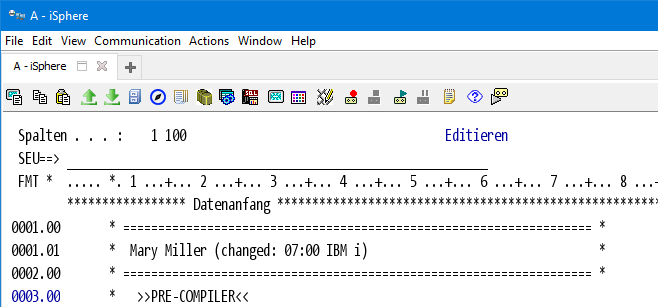
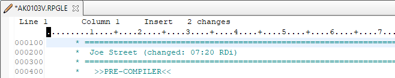
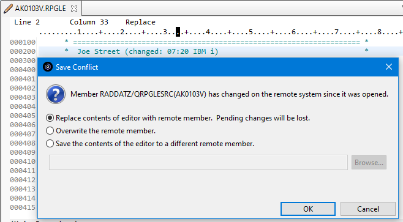
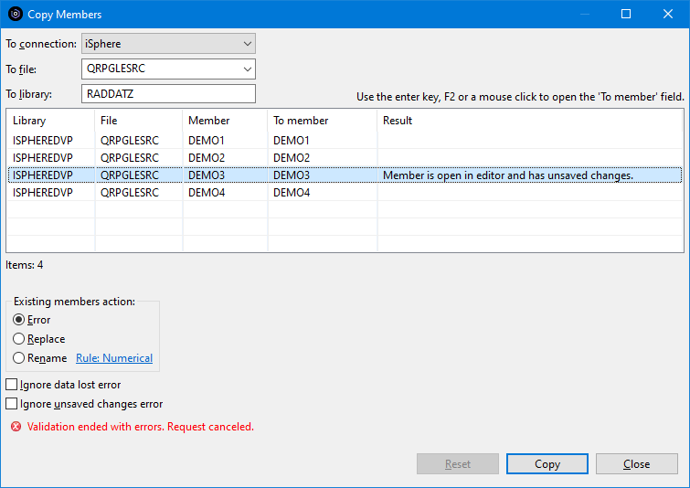

The Copy Members option lets you select and copy members from the RSE
tree, much like the same as with PDM. You can select it from the context menu of
the following items:
The Copy Members option lets you select and copy members from the RSE
tree, much like the same as with PDM. You can select it from the context menu of
the following items:

The following dialog displays the items that are copied. Use the [Enter] key or command key F2 to edit the name of the target members. You may also click on the member name to open the field. Once a field is in edit mode, you can use the tab key to move forth and back between the member names.

Click Copy to start the copy process.
The result of the copy operation is displayed in column Result.
| Warning: Copying members between connections may take significant time, because the members have to be downloaded to your PC before they can be uploaded to the target host. |
The available options for existing members are:
| Error | - | Displays an error message. Does not copy the member. |
| Replace | - | Specifies whether to replace existing members. The system clears the existing member and adds the new records. |
| Rename | - | Specifies whether to rename existing members. The rules applied for producing a new member name are set on the Copy Members preferences page. |
| Ignore data lost error | - | Specifies whether to ignore data lost error. Use this option to copy source members from e.g. 112-byte source files to 92-byte source files. |
The copy members process uses the Remote Systems - File Cache to get the From Member from the cache before downloading it from the remote system. That works the same as dragging and dropping members, which is an IBM supplied process.
The problem is, that the Lpex editor also uses the local cache and in ceratin cases it can happen, that you change a remote member while editing it in RDi.
Usually that does not happen, because the remote member is locked. But when you close RDi without closing the member, the member is not locked again when starting RDi (next morning). That is the point when a member can be change locally and remotely. Drag & Drop just copies the member and hence updates the cache with the remote changes while the member is open for editing in the Lpex editor.
Assume the following situation:
You closed RDi last evening and restart editing a member next morning. Keep in mind, that the member is not locked on the remote system, now. Unfortunately Mary changed the member on the IBM i without telling you about it:

Your changes:

Now you want to save the old member before saving your changes and you want to drag & drop the old member to a save place. Doing that works fine but of course you:

Now carefully think about how to answer that question:
In order to avoid that situation, iSphere disallows copying members that are being edited and that have unsaved changes:
